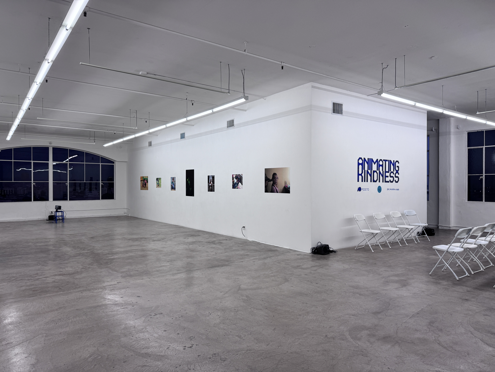

Case Study
Created accessible ML education toolkit including interactive software, model interface library and text editor, allowing students to demo and fine-tune models. Partnered with artist educators and designed workshops to iteratively refine curriculum and interfaces from feedback and measure learning outcomes.
Role(s): Product Design, Strategy, Curriculum Writer, Workshop Design, Educator
Audience: K–12 Students in Los Angeles County; Higher Ed students at CalArts & CCA
